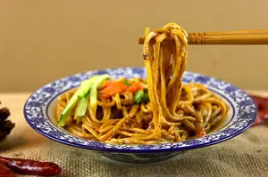
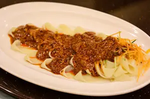
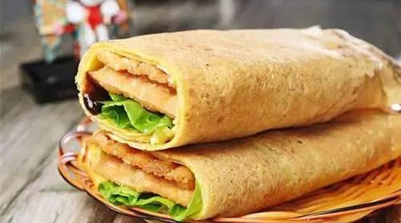
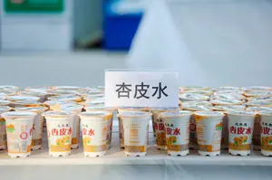

Located in the northwest of China, the main food in Dunhuang is noodles. Locally viewed as a kind of handicraft, there are various noodles in Dunhuang, such as Dunhuang yellow noodles, minced pork noodles, and Dunhuang hot and sour noodles. Lanzhou beef noodles are also popular in Dunhuang. Besides noodles: mutton, chicken, beef, and donkey are also popular foods in Dunhuang.
Shazhou Night Market is one of the best places in Dunhuang to try the local food.
Here, we will introduce you to some famous dishes and drinks in Dunhuang.
Dunhuang Yellow Noodles - Pulled from a lump of dough, yellow noodles are as thin as golden threads. They are pliable and tough, requiring a high degree of skill from the makers. You can eat them with soup or cooked meet or vegetable dishes. Local people like to eat the noodles with diced donkey meet.
- Yellow noodles have a long history, and their making can be found depicted in Mogao murals from the Song Dynasty (960–1279).
Dunhuang Niangpizi - Niangpizi (酿皮子 /nyang-pee-dzuh/ ‘fermented skins’) is a traditional fast food. It is another kind of wheat noodle product and is easy to make. Firstly, mix the flour and water to make dough, then put the dough into a steel box and steam it into a cake. Cut the dough cake into long thin strips, mix them with a few spots of oil, a little mustard, garlic juice, pepper, soy sauce, and vinegar, and a bowl of niangpizi is ready. It is tasty and refreshing.
Deep-Fried Pancakes - Deep-fried pancakes are a traditional dessert that can be traced back to the Tang Dynasty (618–907). Their raw material is discs of dough. To make them, push sugar, sesame seeds, and walnut chips into a dough disc. After deep frying, the surface swells and becomes a golden deep-fried pancake. It tastes crisp and sweet.
Apricot Water - Apricot peel water is the most popular drink in Dunhuang, and you can buy it nearly everywhere in Dunhuang. It is boiled from dried apricots. Apricot water is sour and sweet, a good drink for summer.